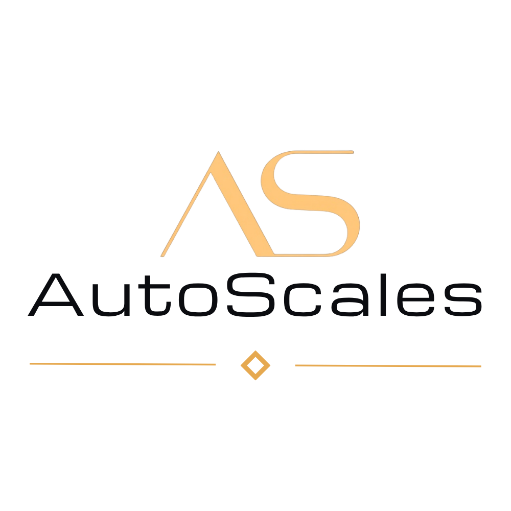
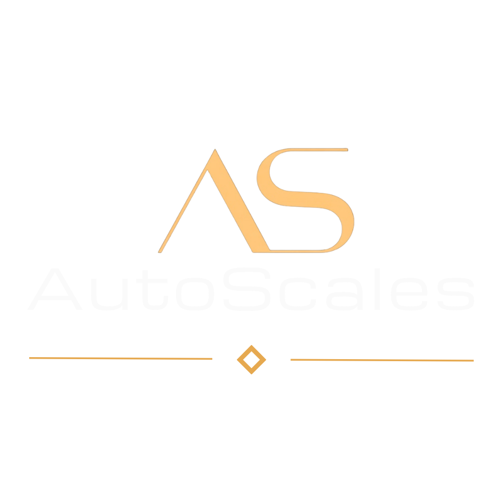

StudioTestfassungNeues Fahrzeug
Fahrzeug anlegen, dann führt die App durch Daten und zehn Fotos.
6 Außenbilder einmal ums Auto (4 × schräg, Front, Heck), dann 4 innen (mit Rücksitzbank). Seiten und Kofferraum sind freiwillig.
Handy quer, Kamera 1x, ruhig halten. Wird der Kasten grün (und der Auslöser), antippen.
Das ganze Auto in den Kasten im Sucher stellen
Niemand im Auto, auch nicht auf den Sitzen
Auto-Erkennung: Beim Anlegen lädt die App einmalig rund 20 MB im Hintergrund (der Browser merkt sich das). Danach prüft sie im Sucher auf dem Gerät, ob das ganze Auto auf dem Bildschirm zu sehen ist. Das Kamerabild bleibt auf dem Gerät. Ohne Erkennung bleibt der Kasten eine Orientierung.
Mehr Hinweise
- Der Kasten im Sucher hilft beim Einrahmen; er bewegt sich mit dem Handy. Ist das Auto auf dem Bildschirm angeschnitten, steht im Sucher ein kurzer Hinweis, zum Beispiel „Schritt zurück“.
- Du siehst jedes Foto und tippst Passt oder Neu. Erst bei „Passt“ geht es hoch.
- Die Seiten (Fahrerseite und Beifahrerseite) und Zusatzbilder sind freiwillig; die Seiten bietet die App nach dem letzten Außenbild an, alle sind auch in der Galerie. Die Karosserie bestimmt den Kasten im Sucher; die Auto-Erkennung vergleicht das Auto damit, und der Kasten wird grün, wenn es passt.
Testfassung: bitte nur Testfotos, keine Kundenfahrzeuge mit Personen oder Papieren; den Fahrzeugschein nur von eigenen Autos. Die App schickt Fotos nur an den eingetragenen Test-Server der AutoScales GmbH i.G. (EU, Irland). Auf dem Handy bleiben nur Fotos, die noch nicht hochgeladen sind, bis sie gesendet wurden.